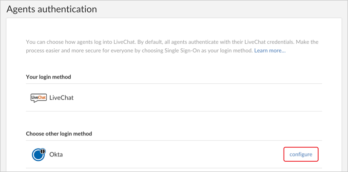
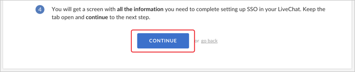

Login to LiveChat as an Owner/Administrator.
Navigate to Settings > Security > Agents authentication: https://my.livechatinc.com/settings/agents-authentication.
Locate Okta under Choose other login method, then click configure.

Click Continue.

Enter the following (see screen shot at end of step for reference):
Identity provider Single Sign-On URL: Copy and paste the following:
Sign into the Okta Admin Dashboard to generate this variable.
X.509 certificate: Copy and paste the following (PEM Text Format):
Sign into the Okta Admin Dashboard to generate this variable.
Click Enable.

All agents on your license will receive an email describing a change in the login process. From now on, normal agents can only login via the Okta Identity Provider. Owner and Admins can also login with Okta, however, they also are able to login with LiveChat credentials in case of emergency.
Done!
Notes:
SP-initiated flows and IdP-initiated flows are supported.
Just in Time (JIT) provisioning is not supported.
If you need assistance, contact LiveChat on 24/7 chat.